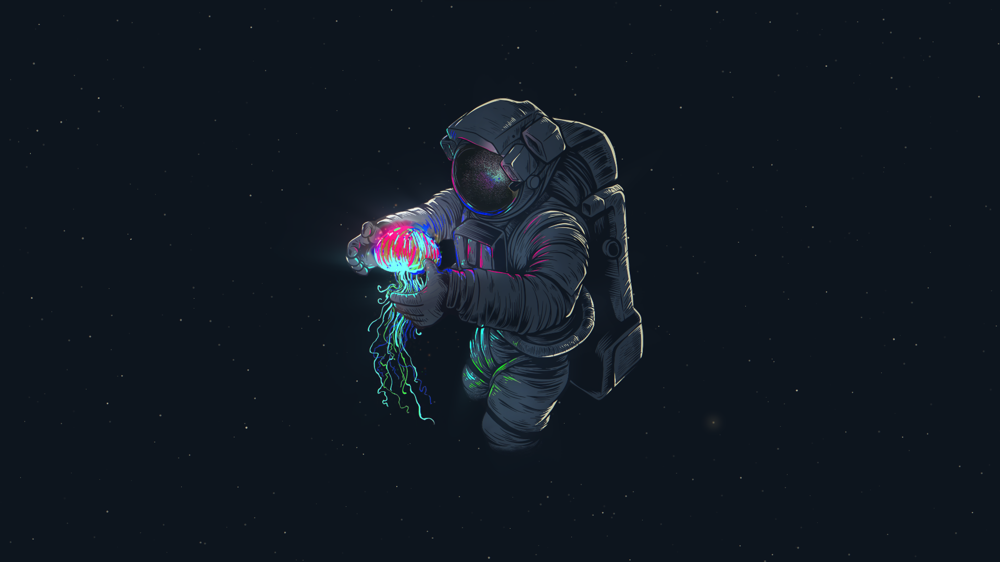
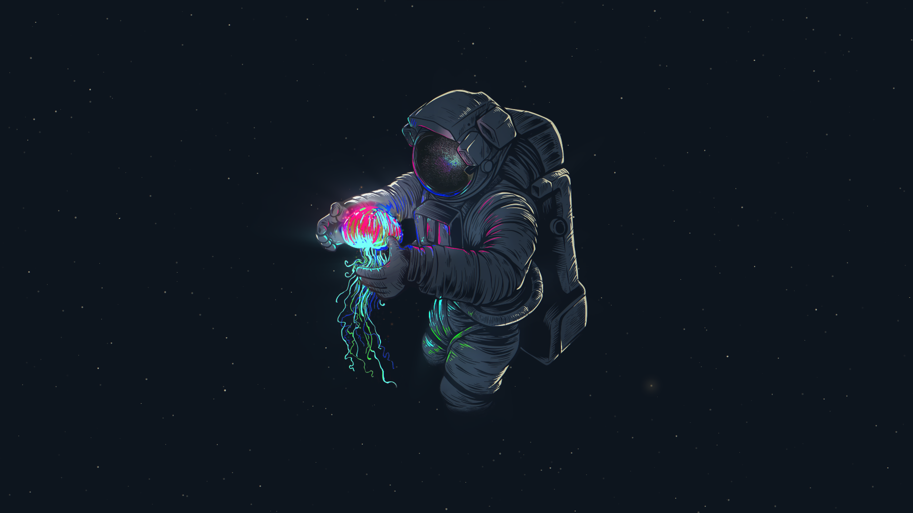
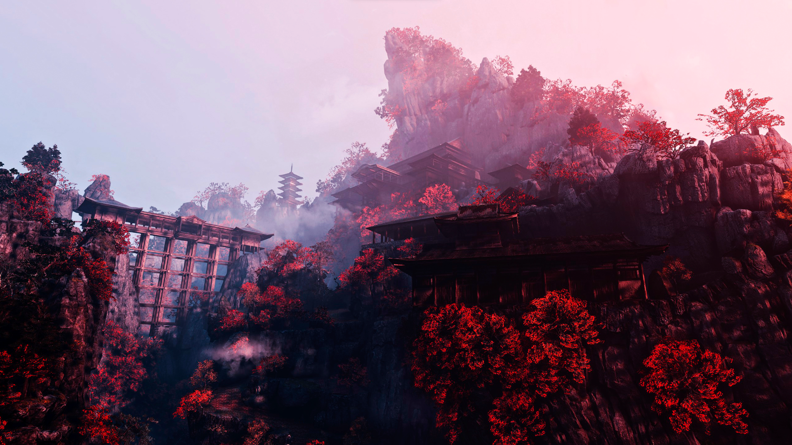
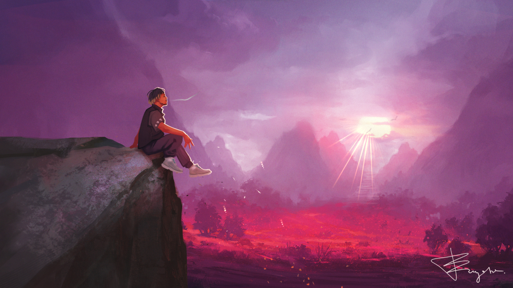
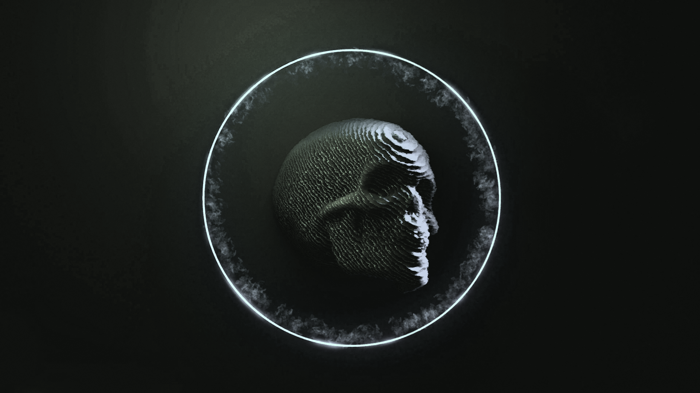

Number 1
The astronaut
This one is super cool, has great colors and its super simple, recomended if you like dark wallpapers with a little bit of coloring to it
The astronaut
This one is super cool, has great colors and its super simple, recomended if you like dark wallpapers with a little bit of coloring to it
Sempo temple from Sekiro shadows die twice
This one is absolutely fantastic, if you like the game this one is a go to wallpaper
Juice WRLD
R.I.P to juice, if you like the artist, this is great
The skull
This is a very cool looking skull, has a ring that glows with the audio thats playing in the background